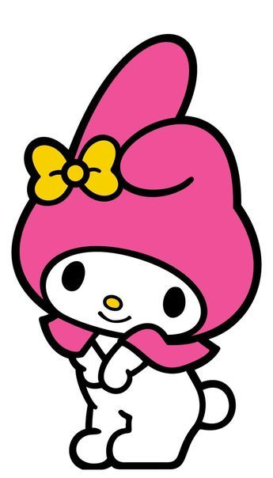

Conheça os bichinhos mais fofinhos ❤️
Bem vindo! Tenho certeza que bichinhos mais fofos que esses você não acha em qualquer lugar, venha conhecer! :)
Venha conhecer!
Início Personagem ContatoBem vindo! Tenho certeza que bichinhos mais fofos que esses você não acha em qualquer lugar, venha conhecer! :)


A gatinha branca, personagem central do programa, vive em Londres, muito amigável e fofa.

Coelhinha branca que usa touca rosa, uma das melhores amigas da Hello Kitty, é muito doce.

É um cachorrinho branco que consegue voar com suas orelhas enormes, é amigo da Hello Kitty.
Azul
Azul
Azul